From the first sealed letter to the fiftieth anniversary.
One app that carries two people the whole way: a considered introduction, a garden that grows while you get to know each other, and a shared space where you keep deciding, together, for years. It combines everything built across three repositories, Evermore (tradWives), Eden (matchmaker) and Together (alynol), into one continuous arc. No feature is dropped; every one is given a place where it flows into the next.
A product and build document for Ali and Dominick. Figures carry their label: sourcedmodelleduncited, the convention already used across the Evermore repository.
Three teams built three answers to three stages of the same relationship. Put end to end they describe one product: a way to meet on purpose, a way to become close before you meet, and a way to keep choosing each other afterwards.
78% of dating-app users report burnoutsourced14. 48% have met at least one of four harassing behaviours on an app; women under 50 far moresourced13. The swipe deck optimises for optionality, so the real questions are asked last. Evermore's answer: roles and non-negotiables first, three sealed letters a day, a yes that is private until it is mutual.
No matching algorithm has published evidence that it predicts who will clicksourced11; machine learning on 100+ traits forecasts how desirable people are in general but not which pair will want each othersourced12. What does build closeness is structured, reciprocal, escalating disclosuresourced1. Eden's answer: a garden of activities where neither person sees the other's answer until both have written theirs.
One person suggests, the other says "sure, whatever you want", and by Thursday the plan is gone. Relationship quality declines after the honeymoon unless couples keep doing new things togethersourced2, and people underrate how much they will treasure ordinary days latersourced5. Together's answer: double-blind deciding on real plans, a shared calendar, memories and sealed notes.
The same mechanic runs through all three products and nobody had noticed: neither answer is shown until both exist. Evermore seals the yes. Eden seals the activity answer. Together seals the vote on a date. It is one idea applied at three distances, and it is the idea that makes honesty cheap: you answer for yourself, not in response to them.
So the unified Evermore is built around one primitive, the sealed answer, and one metaphor that both brands already shared, two halves meeting at a seam: the arch, the two-sided mark, the split hero. Everything else is a chapter of the same story.
What this document does: writes back the understanding of all three codebases, maps every feature to its new home, specifies the journey, the science, the design language and the architecture, and breaks the build into epics and issues with acceptance criteria.
The three products were never competitors. Read in order they are the beginning, the middle and the long tail of one relationship. The diagram shows the merge; the table below it is the full inventory, so nothing is lost in the move.
Every feature found in the three repositories, where it came from, and where it lives in the unified app. Tags: Evermore Eden Together New seam (added only to join two existing features).
__Host- cookie sessions, CSRF origin check, HMAC rate limitsEden shows tiers, insights and a premium "7-dimension deep-dive". Evermore forbids fake percentages. Together forbids any relationship score. Resolution: scores rank letters and pick activities; members only ever see qualitative tiers and a "where you line up" row on non-negotiables; nothing is graded once Together opens. The premium deep-dive becomes a one-time written reflection, "what you've learned about each other", with no number.
Eden: seven profiles a day, swipe gestures. Evermore: three letters, no swiping, "the reading is the product". Resolution: three sealed letters a day. The swipe is removed; the capacity nudge is kept.
Eden hides photos until a graduated reveal at Sprout. Evermore blurs photos until a mutual yes. Resolution: no face before the mutual seal; after it, the Photo Window opens by double opt-in at Sprout or at the Bridge, whichever comes first. Approved photos only.
Eden has a soft streak and 24 h session expiry; Together refuses streaks and guilt. Resolution: no streak counters anywhere. "Days together" is a neutral fact in the garden. Sessions never expire; they go quiet, and a dormant-garden note at 72 h is opt-in.
Evermore requires a declared household role; Eden does not. Resolution: the Chosen Doorway has three doors. "In between" is a full member; role complement filters only when both people declared a side. Roles are jobs, never genders, and reversible until a match.
Eden's strict gender equality breaks for "everyone" and non-binary members. Resolution: Evermore's "who are you open to meeting: women / men / either", declared, never inferred, and symmetric.
Three games (under three minutes) versus eleven marketed non-negotiables plus a quiz. Resolution: the doorway is split across the first day: role and four non-negotiables before any letter; games before the first garden; the rest offered when it is useful. Mobile completion falls past about three minutessourced25.
FastAPI + Expo, Vercel functions + Neon + static HTML, vanilla SPA + Upstash. Resolution: one TypeScript monorepo on the Evermore API and database, with Eden's engine ported as a pure package and its 261 tests as the port's specification. Details and the alternative in Architecture; the decision is Ali's.
The arc is designed so that every hand-off is a feature that already exists in one of the three products. The mutual seal plants the garden. The bloom opens the bridge. The first date is decided with Together's engine. "We met" invites the shared space. Chapters feed the weekly ideas.
Role, non-negotiables, three short games, your seed. Everything difficult happens first.
Up to three sealed introductions a day. A yes is private until it is mutual.
Activities where neither answer shows until both exist. A plant grows from what you do.
Bloom, intentions, and a first date the two of you decide on without anyone going first.
A shared space you both opt into: dates, trips, upcoming, memories, notes for later.
Real gatherings in your city. Open to anyone, no match needed, verified hosts only.
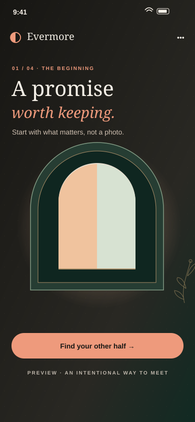
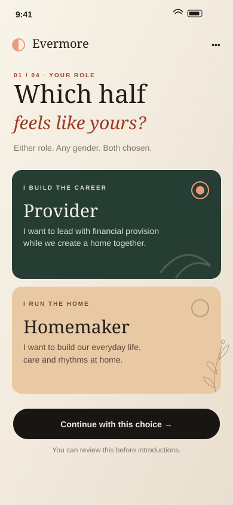
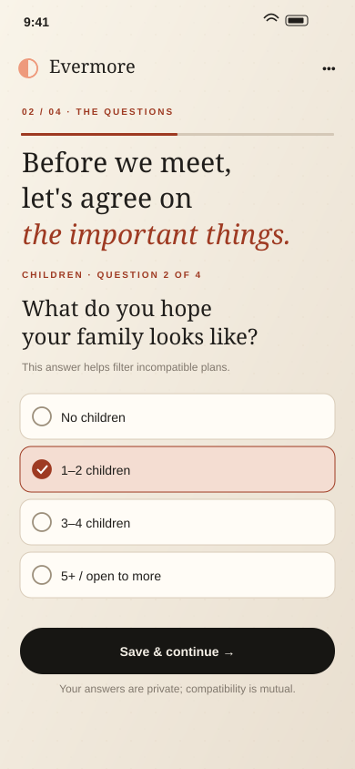
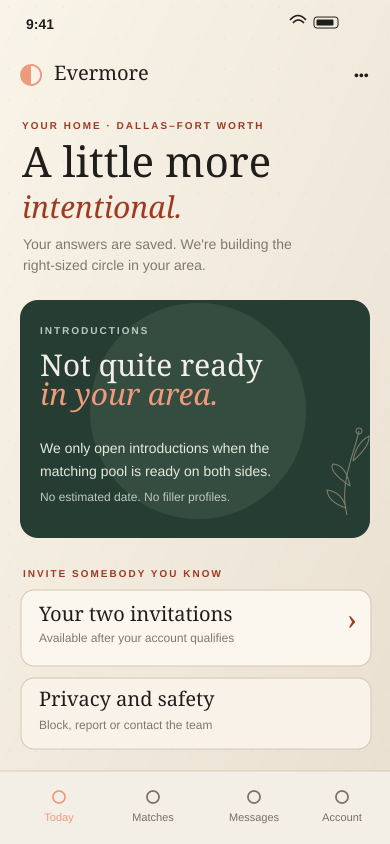
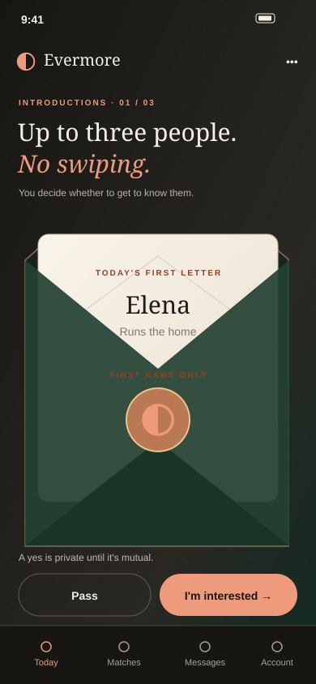
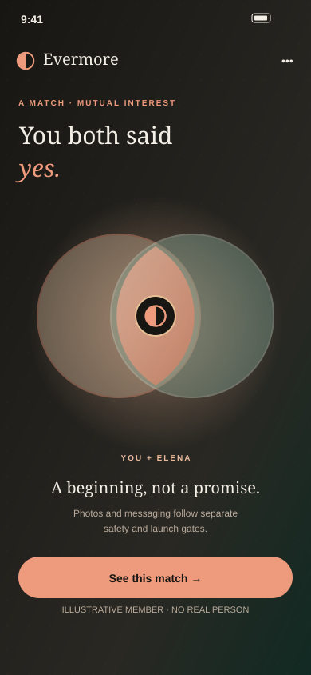
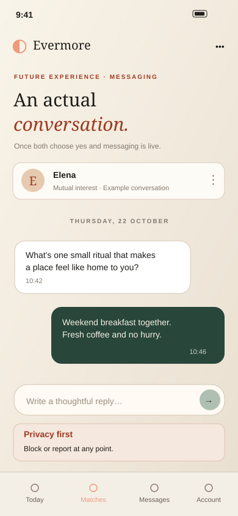
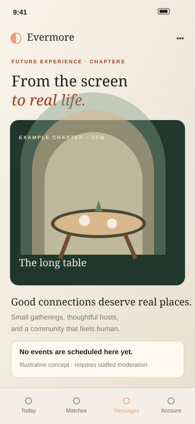
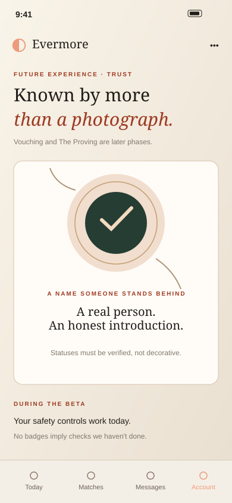
docs/product/evermore-experience/screens. They are authored mockups, not production screenshots, and all members shown are fictional. The Garden, Bridge and Together chapters below extend this language rather than replace it.The doorway is the merged onboarding. It keeps Evermore's order (role before questions before any photograph) and Eden's rule that personality is measured indirectly, through play, because self-report fails on social desirability and limited self-knowledgesourced26.
Day one, before any letter: account (invite code, date of birth, 18+ attestation), the Chosen Doorway (build the career / run the home / in between), who you are open to meeting, the four live non-negotiables one at a time (children, one income, timeline, who steps back) and a ZIP code. Then three profile prompts.
Before the first garden: the three games, Garden Builder, Story Choices and Pattern Sorter, under three minutes, with the 8-question Spark Quiz as a keyboard-only fallback; Garden DNA; seed choice.
Offered when useful: dealbreakers, the remaining marketed non-negotiables (the table, where you live, schooling, screens, money and debt, faith as a separate opt-in store), up to three private photos, the Proving ledger, vouching requests.
Rules carried over: roles are chosen, never assigned, and reversible until the first match. Same-side members are never shown to each other when both declared a side. "In between" members are matched on non-negotiables alone. Every answer is private: no other member can read it; introductions see only the first name and side until the seal.
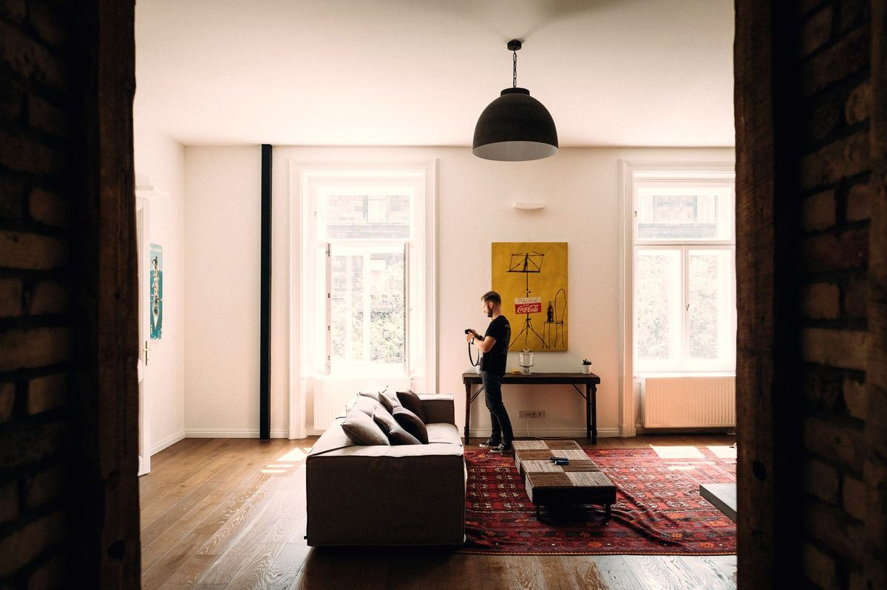
Garden Builder (4 questions, drag grid in the full version): love language, attachment instinct, connection style, relationship approach. Story Choices (River at the exhibit): introspection, curiosity, analytic vs empathetic, social vs intimate, vulnerability, plus the disagreement exchange the scorer needs. Pattern Sorter (15 pairs): extraversion, structure, expression, optimism, depth. Output: Big Five, attachment anxiety and avoidance, communication directness and emotionality, conflict style, love language, recharge, weekend, humour.
Each morning the home screen opens like an envelope: today's letters, at most three, chosen for you rather than ranked by you. Choice overload is real; people are more satisfied with a selection from six than from twenty-foursourced16. Three is the reading-is-the-product number from Evermore and the daily-cap recommendation from Eden's fatigue panel.
How a letter is chosen. Hard filters first, both ways: role complement, non-negotiables compatible under the modelled rules (children within one step, income plan within one step, timeline within one step, not both stepping out), same ZIP area, dealbreaker age and distance, nobody blocked, reported or withheld. Then Eden's compatibility ranking over the pool (values, communication, lifestyle, interests, humour, attachment, love language, Big Five), used only to order. Then reciprocal daily allocation with a per-member cap of three and 20% exploration slots so that nobody is invisible, the failure that drives men off incumbent appsuncited.
What a letter shows. First name, chosen side, the "where you line up" row (✓ match / ≈ soft / ✕ miss on the non-negotiables you both answered), one qualitative line from the spark note ("You both believe in talking things through"), and the prompts they chose to show. No face, no age beyond the band, no percentage.
Yes or pass. Both are final and both are private. Nobody is ever told that someone said yes unless they said yes too; a pass simply stops the letter appearing. With three or more active gardens, a yes first asks whether you have the time for another one. A mutual yes is the mutual seal: the two half-marks join, the copy says "a beginning, not a promise", and a garden is planted with both seeds.
Honest states. "Not quite ready in your area" with no date; counts shown only at five or more; "no more letters today"; invitation codes offered as the way to help.
The garden is Eden, whole. Thirty-eight activities in three stages, a fourth stage designed, and a plant that grows from what the two of you actually do. This is where closeness is built, and the mechanics are the ones with evidence behind them.
Quick Fire, Perfect Day, Three Things, Hot Takes, Never Have I Ever, Rapid Fire Match, Personality Bingo, Sync Challenge, Speed Categories. Light, fast, many short interactions, because familiarity grows attraction in live interactionsourced20.
Style Swap, Would You Rather: Values, Story Builder, Caption This, Guess Your Match, Playlist Roulette, Team Trivia, The Rewind, Good News!, Two Truths & a Lie, Hot Takes Arena, Prediction Game, Dream Date Architect, Soundtrack of Us, Mixtape Exchange, Trivia About Me, Story Chain, Draw Together. Cooperative play bonds; shared humour predicts satisfactionsourced19. Conflict activities unlock only after three positive ones (the Gottman guard).
Deep Roots (the 36 questions in three levels), The Real Me, If You Really Knew Me, Values Compass, Dream Map, Photo Window, Listen Together, Memory Lane, The Wish List, Secret Ballot, The Time Capsule. Opt-in, with a security prime first and extra framing around family history. Vulnerable disclosure is the potent kind, and the riskiest, so it is scaffolded.
The reveal. The API returns partner_response: null until both responses exist; the client cannot leak what it never received. Three modalities fit the activity: a score ("7/10 matched"), a drama ("You said… and they said…"), or a letter, typed word by word onto a postcard. When both are present the reveal is live: a 3-2-1 countdown over a WebSocket, and a "reveal anyway" fallback. Afterwards, three small questions in sequence: did they surprise you, did it make you laugh, did they get you. Those answers feed the garden's insight and the Authenticity Signal, never a score shown to the other person.
Growth. Every completed activity earns 10 or 15 points. Seed at 0, sprout at 30, bud at 70, bloom at 110. The two plants, each in the colour of its owner's seed, grow toward a divider that fades as the points climb. Leaves yellow after three quiet days; nothing breaks, nothing nags. Stage transitions write a garden event with a sentence of its own ("Something is forming. Three activities in."). Every activity and milestone goes into the Memory Book.
Around the activities. Today's Question, the same one for every pair that day, with no streak. A Connection Echo after every third activity. A conversation that opens at the seal, text only, with thoughtful prompts, a report button on every thread and a block that ends it. The Photo Window at sprout: both must opt in before either sees a face. "Ready to meet?" at sprout or bud for pairs who just know; the bloom remains the ceremony.
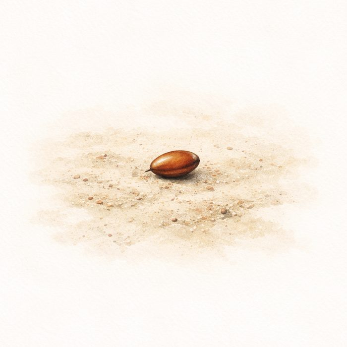
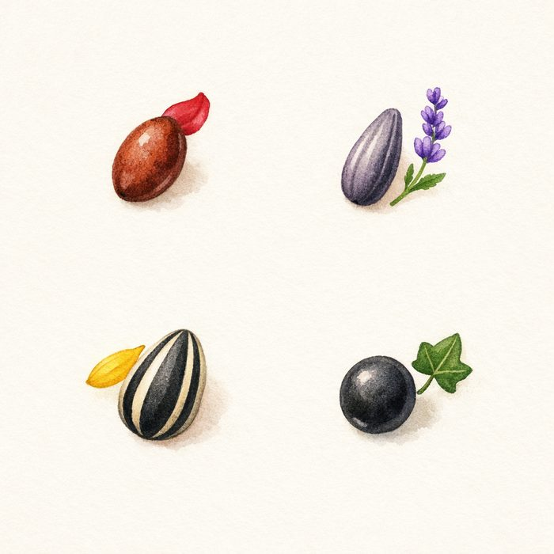
This is the chapter none of the three products finished, and it is the seam that makes the whole arc one product. Eden designed the Bridge (date designer, honest expectations, meeting prep, post-date check-in) and built the first piece, 46 personality-scored first-date templates. Evermore built the Intentions road. Together built the deciding engine. Put together:
1 · Bloom, or "ready to meet". At bloom the garden asks "Let's do this / Not yet". At sprout or bud a quieter card asks the same for pairs who just know. Either way, three bridge questions first: what are you looking forward to, what should they know before you meet, your ideal first five minutes.
2 · Intentions, co-authored and optional. Evermore's terms (families meet early, public first meetings, boundaries stated, exclusive from day one, a mentor couple, counselling) and the timeline become a jointly editable road. Each person proposes; nothing is on the road until both agree. It is never a countdown and never required.
3 · The first date, decided double-blind. The Date Designer proposes five ideas scored on both personalities (a quiet walk and coffee for a low-pressure meet, a pottery class for two makers), each with a conversation starter. The pair answers yes, maybe or pass on each, privately. A mutual yes becomes the plan: a public place, a time, who books it. A pass never surfaces as a rejection.
4 · Meeting prep and after. Honest expectations (one thing each), a public-place reminder and a safety check-in option, then the "We met!" milestone saved to the garden, a short First-Date Debrief for each person privately, and a post-date check-in a day later. "We met" is also the moment the app offers the shared space.
Together is the alynol product, kept whole: six tabs, double-blind deciding on everything, a shared calendar, a collection of memories, notes sealed until a date. It opens only when both people turn it on; nothing opens because you matched. The garden comes with you and keeps growing from the things you do.
The next agreed plan at the top ("In 3 days"), what is waiting on one of you, and the day's prompt ("What would make this week feel less like admin? Answer it separately, then compare.").
A weekly handful of real things nearby with a date, a cost and a link that books it, plus your own ideas. Filters that matter: category, energy (low / some / high), cost band, distance, duration, access needs (step-free, seated, quiet, parking). Each answered yes / maybe / pass, sealed. Chapter events arrive here too.
Dreaming, planning, booked, done. A shortlist that sits until one place sticks, then days, bookings and a packing list you both edit. A shared list beats fourteen screenshots in a chat thread.
One short list of what is agreed, a name against each item so it is clear who books the table, edit or cancel by either, export as a normal calendar file. No lock-in.
Finished plans offer to become a memory: a line and a date. The Garden's memory book (every activity, both answers, every milestone) lives here as the first chapter of the collection. People underestimate how much they will enjoy rediscovering ordinary dayssourced5, and sharing good news with a responsive partner raises wellbeing beyond the event itselfsourced9.
Write something now, set the date it opens; sealed from both of you until then. Eden's Time Capsule (a message to "future us", opened after 30 days) becomes the first note in every shared space. No notification pressure. It is simply there when the day comes.
The garden in Together. The plant is still there, in its own view, with the whole history underneath it. It keeps growing from memories and from the Connection-stage activities that fit established couples (What I See In You, Our Story So Far, Dream Together, the Gratitude Ritual), each with the same sealed reveal. It is a record, not a score: no stage above bloom, no health rating, no grade.
Later, by the owners' choice: Shared Chapters (a co-authored correspondence about future life, explicitly post-beta), the Proving as opt-in shared household exercises with two independent participants and no judgment score, and a small paid tier for the weekly discovery, which is the part with a real cost behind it.
Leaving. Each person can export their own copy of everything at any time, in a format readable without Evermore, and close the shared space. Nobody's history is held hostage.
Evermore's Chapters are a per-city standing calendar that anyone can join without a match: the long table on the first Sunday (twenty people, assigned seats), the money workshop on the second Saturday, a monthly supper club in members' homes, a seasonal trip out of town, and a weekly open evening. Local partners (farm stands, co-ops, run clubs, trade schools, congregations) host and vouch.
In the unified app Chapters do two more things. Their events flow into Together's weekly Dates ideas for couples in the city, so a pair's shared life and the community are the same calendar. And the gatherings are where vouching happens in person. Verified events and actual hosts only; no fictional RSVPs, and "no events scheduled here yet" is a valid, honest state.
Community integrity, all shipped before Chapters opens: extremist-content moderation, no ethnicity filters, a published community standard, romance-scam detection and financial-abuse resources. Romance-scam losses reached $1.16B in the first nine months of 2025sourced27.
Three small working demos on this page, and a full walkthrough of the whole arc as a separate page. Everything runs in your browser; nothing is sent anywhere. "Theo" is a fictional partner whose answers are scripted.
Open the full walkthrough demo → Doorway → Letters → Garden → Bridge → Together, two names, on this device only.
Theo has already answered. You cannot see what he said until you have answered too, and you never will unless you both said yes.
Today's first letter
Theo
Builds the career · Dallas–Fort Worth
Where you line up: children ✓ · one income ✓ · timeline ≈
"You both believe in talking things through."
Perfect Day, from Discovery. Theo has written his. Write yours; the reveal is simultaneous and the garden grows.
Three ideas near you. Theo has voted. Answer all three; agreement surfaces, a pass never does.
The three research programmes behind the products (Evermore's dossier, Eden's connection-psychology report and expert panels, Together's product rules) agree more than they knew. Below, each mechanic in the unified app is paired with the evidence it rests on, and with what the evidence does not support. Numbers link to the sources list.
Forty-five minutes of escalating, reciprocal self-disclosure produced closeness in strangers near that of long relationships; the structure, not attitude matching, was the active ingredient1. Taking turns matters: alternating disclosure produced more liking than one person disclosing in full first3. Disclosure and liking correlate across 94 studies31, but intimacy only grows when disclosure meets a responsive partner4,32. Hence: both answer, then both see, then "did they get you?".
People offered six options bought and were more satisfied than those offered twenty-four16. 78% of app users report burnout14; 54% of women say they were overwhelmed by the volume of messages13. Online meeting overtook friends as the main way US couples meet around 201317, so the channel is not the problem; the deck is.
A review of the industry found no published evidence that matching algorithms predict relationship success11; machine learning over 100+ traits could not forecast which particular pair would want each other12; across 43 longitudinal studies, partner-specific compatibility explained almost none of the variance in relationship quality22. Actual similarity predicts attraction before people meet but fades in existing relationships; perceived similarity persists18. Uncertainty itself increases attraction24. So Eden's seven dimensions order the letters and pick activities, and members see tiers and a sentence, never a number.
People know their own thoughts better than they know their own behaviour; others often judge our traits better than we do26. Game-based assessment infers traits from play rather than from self-report30; the Eden research review ranks it as harder to fake and better liked than questionnaires. Mobile survey completion drops past about three minutes25. The doorway games are under three minutes and measure indirectly; the long marketed questionnaire is spread across the first week.
Romantic love works as an attachment process10, and attachment security is the most robust predictor of relationship outcomes in the adult literature21; a secure partner lifts an insecure one, which is why the scorer gives a secure-insecure pair 0.6 and an anxious-avoidant pair 0.15. Security priming, a moment spent thinking of someone who has always been in your corner, shifts behaviour toward secure functioning, which is why Depth begins with it.
Couples who stayed together kept positive to negative interactions near five to one during conflict; stonewalling predicted dissolution23. Playful bids and enthusiastic responses in ordinary moments predicted humour and affection during later conflict8. So avoid-plus-avoid scores 0.3, conflict activities unlock only after three positive ones, and Today's Question is a daily bid with no streak attached.
Across 39 studies, positive and shared humour predicted relationship satisfaction while aggressive humour predicted the opposite19. Shared participation in novel and arousing activities raised relationship quality over a mundane task in three experiments, and self-reported boredom mediated the decline after the honeymoon2. Many short interactions build familiarity and liking20. Hence Caption This, the surprise prompt, and nine light activities before a deep one.
Shared relationship activities function as maintenance, raising satisfaction and commitment6. People who plan more exciting dates experience more self-expansion and, through it, more closeness7. Together's weekly discovery exists to put an exciting, bookable option in front of a tired couple; the filters exist so "exciting" fits the energy they actually have.
In four longitudinal studies people underestimated how curious and pleased they would be to rediscover a documented ordinary day months later5. Telling a partner about good news, and being met with active, constructive interest, raised daily wellbeing beyond the event itself9. Memories, the Good News! activity and notes for later are those two findings as features.
Love languages lack strong empirical support for their three central assumptions15, so that dimension carries 3% and is framed as "how you like to be shown". Compatibility percentages are not shown. Verification tiers are self-declared until a vendor confirms them, and the Proving says so. Nothing in the app is end-to-end encrypted, and the privacy page will not say it is. Testimonials and waitlist counts are never invented.
The three products arrived, independently, at warm paper, dark ink, a terracotta accent and a green. Two of them chose an arch; two chose a two-sided mark. The unified language takes what they share and gives Eden's garden a place in it.
Evermore's site tokens (paper, ink, forest, apricot, brick, night) plus Together's clay and moss. Eden's emerald and teal (#10B981, #14B8A6) are retired; the garden is drawn in moss and the seed colours (rose, lavender, sunflower, ivy) so each pair's plant is its own. Sourced / modelled / uncited tag colours stay as they are. Full dark mode on every surface.
Fraunces for display, with the optical-size and WONK axes live for warmth at large sizes and restraint at small ones. Instrument Sans for text and interface. JetBrains Mono for figures and keys. Both families come from Together; the alternative pair (Instrument Serif and Hanken Grotesk, from the Evermore site and the owners suite) stays available and the owners suite keeps it. This is Dominick's call under D70, and the issue for it is written both ways. Numbers are tabular everywhere they line up.
The arch, split. Together's doorway and Evermore's two halves are one shape: two legs, one opening, a seam down the middle. Forest and apricot are the two chosen sides.
The seal. At a mutual yes the seam closes with a wax-coloured seal. It is the only celebratory moment in the app and it lasts 650 ms.
prefers-reduced-motion; haptics native-only and optional.Paper ground. The dual plant top centre, stage sentence under it in italic Fraunces. Today's Question as a folded card. Then the activity list: a row per activity with a small wax dot for "your turn" and a seal for "both answered". A quiet "Ready to meet?" card appears at sprout, in the apricot tint, never as a modal.
Night ground for the reveal only. Two columns on wide screens, two stacked cards on phones, your side first. Letter modality types onto a paper postcard; score modality counts up in Fraunces; drama modality pauses between the two. Afterwards three small prompts in a row, then "Reflect, then chat".
Idea cards in the arch frame with a photograph from the category pool, title in Fraunces, a row of pills (cost, minutes, energy, access), the venue line, and a three-button vote row. The result line sits under the row: "Your answer is private until Theo answers" with the wax dot, or "A plan" with the seal.
Today there are three stacks: FastAPI with an Expo client (Eden), Vercel functions on Neon Postgres with static pages (Evermore), and a vanilla-JS single-page app on Upstash Redis (Together). The recommendation is one TypeScript monorepo built on the Evermore API and database, because that is where accounts, safety, photos, the queue and the owners suite already run in production. Eden's engine is pure content and pure functions; it ports cleanly. This is an architecture decision for Ali (D70); the alternative is recorded below and in the epic.
Recommended: Expo universal. Eden's React Native app is the most complete client of the three (38 activity renderers, the whole garden), Expo Router produces web as well as iOS and Android from one codebase, and the SwiftUI concept is explicitly out of the beta. The web output is what the Texas beta ships; the store builds follow when the owners choose. Cost: editorial typography on the web output needs care; the design-system epic owns that.
Alternative: web-first React, native later. A Vite React app with the same engine package, and Capacitor or a second Expo client for the stores. Better type control on the web, two clients to keep in step. Pick this if the owners decide the web beta must look like the marketing site to the pixel.
Either way: the engine, the API, the database and the design tokens are the same, so the choice does not block any epic but the client ones. No manifest or service worker until SB 2420 is settled (D163).
Free in the founding metro, as decided. Then one subscription, tested with the Evermore cohorts from D11 ($14.99 a month or $79 a year against $24.99 or $129), web billing, the same price for every role and no sex- or age-based pricing. Eden's premium items (garden themes, activity packs, a written reflection in place of the "deep dive") and Together's paid weekly discovery are what the subscription contains; Eden's $12.99 and $79.99 price points sit inside the lower cohort. Petals (à-la-carte) and a matchmaking tier stay in the backlog. Pricing is Dominick's call; nothing about it is built before the beta.
| Table | From | Notes |
|---|---|---|
accounts, sessions, invite_codes, auth_rate_limits | Evermore | Eden users fold in; gender and looking-for become "open to meeting" |
profiles, non_negotiable_answers, sensitive_answers | Evermore | faith and health answers in a separate, opt-in table (MHMDA/TDPSA) |
trait_profiles | Eden spark_quizzes | 8 categorical + Big Five + attachment axes + communication axes; source = games or quiz |
profile_prompts, dealbreakers, seeds | Eden | as is |
photos, removal_* | Evermore | as is; photo window adds photo_window_optins |
introduction_days, introductions, interests, matches | Evermore | Eden likes/passes fold into interests; ranking score stored per introduction, never served |
gardens, garden_events, activity_sessions, activity_responses, daily_question_responses, match_outcomes | Eden | as is; sessions never expire |
messages | Eden/Evermore | text only, report per thread |
pairs, pair_items, pair_votes, pair_notes | Together | a pair opens by double consent; items typed idea/trip/memory/note; votes sealed per item per member |
intentions, bridge_responses, date_proposals | New seam | the Bridge; proposals are pair_items of kind "first date" |
proving_records, vouches | Evermore | vouching ported from the local server (friends/community, confirm/decline) |
chapters, chapter_events, chapter_hosts | Evermore | verified hosts only |
blocks, reports, ncii_requests, contact_requests, queue_events, queue_alerts, authenticity_flags | Evermore + Eden | one queue; authenticity flags visible only to owners |
waitlist_signups, owner tables (owner_users, ledger_entries, budgets, sprints, tasks, meetings, retro_items, board_messages, …) | Evermore | unchanged |
Migrations stay an ordered, append-only list as in api/_lib/db.js. Stage-3 and later disclosure data is deleted 30 days after a match ends (Eden's rule). Owners' metrics read aggregates only and hide counts under five.
Evermore built the operating system for this: a queue with deadlines, an audit trail, alerts, withholding, image hashing and a human reading every report. Eden adds the Authenticity Signal and the Stage 3 safeguards. Together adds the privacy posture: demo mode, export, delete, nothing sold. All of it carries over.
api/_lib/queue.js; the 48 h clock from the TAKE IT DOWN Act28.| State | Allowed | Forbidden |
|---|---|---|
| Signed out | Brand, demo mode, waitlist, policy | Any introduction |
| Incomplete doorway | Own role and answers, honest gating | Other members, letters |
| Eligible, pool not ready | Area status, edit answers, invite route | Names, photos, counts under 5 |
| A letter | First name, side, line-up row, spark line, yes/pass | Face, age, bio, answers, location, % |
| One-sided yes | Own decision state | Any signal to the other member |
| Mutual seal | Garden, conversation, Today's Question | Photos before double opt-in |
| Photo window | Approved photos, 5-minute links | Unapproved photo, EXIF, early reveal |
| Bridge | Bridge answers after both, date proposals | Either side's votes before both exist |
| Together | All shared records, export, close | Scores, streaks, the other side's private notes |
| Blocked / reported / withheld | Safety actions, neutral explanation | Pairing, notifications, reveals |
No analytics, no advertising, no tracking, nothing sold, nobody reads your notes. Together's demo mode runs entirely on the device and the API answers 401 until a shared space is turned on. Every member can export everything they put in as plain JSON and delete their account outright; a shared space closes with each person keeping their own side. Photos are re-encoded with location and camera data stripped and served by five-minute links. Faith and health answers live in a separate opt-in store with their own consent (MHMDA, TDPSA). Stage-3 disclosures are deleted thirty days after a match ends. Sealed notes are stored in plain text and the privacy page says so: sealing is a product behaviour, not encryption.
The Texas notice: Evermore performs no criminal background checks and says so in bold capitals where Texas Business & Commerce Code ch. 106 requires it (B18). Dating is not an FCRA permissible purpose, so a background-check tier needs legal review before it is priced.
No relationship health rating, no compatibility percentage, no weekly grade. The ranking exists; you never see it.
Nothing breaks if you ignore it for a month. No notification exists to make you feel you are failing at something you chose for fun.
A yes, an answer or a vote is never shown until the other one exists. A pass never shows as a rejection.
Answers before photographs. No face before the mutual seal, and then only when both opt in.
No invented counts, testimonials, scarcity or encryption claims. Examples are labelled fictional. Counts under five are not shown.
No last-active, no typing indicators, no pay-to-see-who-liked-you, no timers that punish.
Roles are jobs you choose, not genders you were born into. Either side, anyone, reversible.
Export everything at any time in a format readable without us. Leave with your side intact.
The backlog lives as GitHub issues in asaad-jaegerlabs/alynol, the empty repository behind the production Evermore project. Each epic below is an issue with child issues; each child carries a user story, scope, acceptance criteria, visual direction, dependencies and the sources it rests on. The Evermore repository's own 74 open issues for its December beta are referenced, not duplicated: that beta ships on its own repository and the unified app absorbs it at M1.
Monorepo, design system, engine port with Eden's tests passing, unified schema and migrations, auth and invites, CI. Nothing member-facing yet.
Doorway, three sealed letters a day, the mutual seal, conversation, photos, safety and queue, owners suite, marketing site. Equivalent to the tradWives December beta, on the new base; members migrate.
All 38 activities, the reveal, growth, Today's Question, insights, photo window, memory book, live reveal.
Bloom, intentions road, date designer into the deciding engine, we-met, then the six Together tabs, export, close.
Chapters, weekly discovery, Proving verification, vouching, Authenticity Signal, Connection-stage activities, subscription.
iOS and Android builds, push (opt-in), security review, load, restore drill, accessibility audit, the owners' go/no-go.
One repo, one API, one database, one engine package; the platform ADR; CI; migrations; demo-mode engine on the client. Issues #15, #16, #17, #18, #20, #21.
Tokens, type decision, the split arch and seal, letter / plant / arch-frame components, motion and accessibility rules, dark mode, imagery pipeline. Issues #19, #22, #23, #24.
Invite-only accounts, Chosen Doorway, non-negotiables one at a time, three games and the quiz fallback, Garden DNA, seed, prompts, dealbreakers, private photos. Issues #25, #26, #27, #28, #29, #30.
Eligibility filters, ranking, reciprocal allocation, honest pool states, the letter, sealed yes/pass, capacity nudge, the mutual seal. Issues #31, #32, #33, #34, #35.
Catalogue and content port, sessions, both-answer-before-reveal, three modalities, live reveal, micro-prompts, Stage 3 safeguards, Gottman guard. Issues #36, #37, #38, #39, #40.
Growth and stages, dual plant, events, presence and momentum, Today's Question, Connection Echo, qualitative insights, memory book, share cards, themes. Issues #41, #42, #43, #44.
Text messaging with prompts, report per thread, block ends thread; graduated photo reveal by double opt-in on approved photos. Issues #45, #46.
Bloom and ready-to-meet, bridge questions, intentions road, date designer, first date decided double-blind, meeting prep, we met, debrief, check-in. Issues #47, #48, #49, #50.
Consent setup, Today, Dates with filters and weekly discovery, Trips, Upcoming with ICS, Memories, Notes for later with the time capsule, export, close, demo mode. Issues #51, #52, #53, #54, #55, #56.
Block and report, queue and SLAs, withholding, intimate-image removal and hashing, contact requests, Texas notice, deletion cascade and export, Authenticity Signal, community integrity. Issues #57, #58, #59, #60, #61.
Per-city verified events and hosts, local partners, events into weekly discovery, Proving ledger and verification tiers, vouching ported from the local server. Issues #62, #63, #64, #65, #66.
Keep every section; add garden and Together aggregates, authenticity escalations, Chapter verification, pricing-cohort readouts; counts under five hidden. Issues #67, #68.
Merged site: two-halves hero with the working demo, journey, garden, "why this works", FAQ, privacy, press, why-now, credits; waitlist with ZIP and how-heard; unsupported claims removed. Issues #69, #70, #71.
One subscription with the D11 cohorts, web billing; iOS/Android via Expo; opt-in push; CSP, abuse review, load, restore drill, accessibility; go/no-go. Issues #72, #73, #74, #75.
Created 27 October 2026: epics #1–#14 and child issues #15–#75 in asaad-jaegerlabs/alynol, labelled by milestone and area, each child attached to its epic as a sub-issue. Every child issue carries a user story, scope, acceptance criteria, visual direction, dependencies and sources.
Peer-reviewed studies and primary documents cited on this page. Industry figures from the three repositories' own research (the Evermore dossier, Eden's panels) are used only where they carry a label.
Repository sources read for this document: tradWives (site, app, api, server, owners-app, docs/exec, docs/build, docs/product/evermore-experience, research-report.html, concept-playground.html), matchmaker (backend, eden-mobile, mobile, eden-web-demo, landing, docs/research, docs/design, docs/plans, RESEARCH_REPORT_CONNECTION_PSYCHOLOGY.md), the live evermore-together.vercel.app deployment (the alynol repository is empty) and the 27 October build and deployment report.
Pexels License, served from this page: #19793454, #5425602, #32738698, #36765874, #95425, #16901401, #6693557, #6670130, #7015070, #12298227, #2521560, #35652755, #36057108, #5975591, #64776 (pexels.com/license). The same fifteen photographs the Evermore Together site credits.
CC0 1.0 via Wikimedia Commons, from the Evermore site: "Flat in Budapest" by David Hellmann; "Brunching with Friends" by Ali Inay; "Kitchen table" by Clem Onojeghuo; "Warm light in the dining room" by eberhard grossgasteiger.
Garden stages, seeds and the entwined mark: illustrations from the Eden repository (images/). Screen references 01–09: tradWives/docs/product/evermore-experience/screens. The people pictured are not members and have no connection to Evermore.